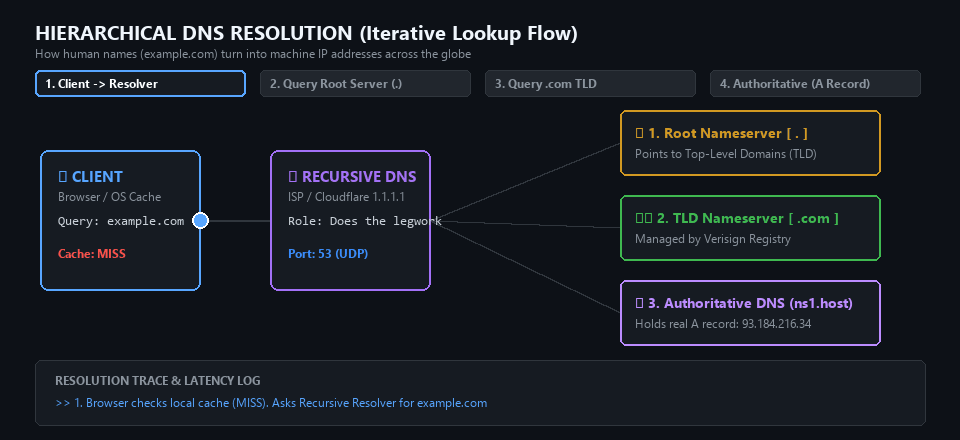

02 · Domain Name System (DNS)
Part 1 · Networking & traffic · ⏱️ ~18 min read · Prerequisites: 01 · Client–server networking
🏢 Real-World Deep Dives: See Google Public DNS, Route 53, and Netflix examples in REAL_WORLD_EXAMPLES.md.
🧒 The 30-second version
Computers on the internet don't understand names like google.com or netflix.com—they only understand numerical coordinates called IP addresses (like 142.250.190.46 or 2607:f8b0:4005::200e).
DNS (Domain Name System) is the decentralized global contact book of the internet. Whenever you type a URL, your computer asks a chain of specialized servers to translate that human-friendly name into the server's numerical IP address in a fraction of a second.
First pass
In the first lesson, the browser already knew where to send GET /guide. Now start with only the name trailnotes.example. DNS is the system that maps that name to an address the browser can connect to.
flowchart LR
B[Browser] -->|Look up trailnotes.example| R[Recursive resolver]
R -->|Ask when answer is missing from cache| A[Authoritative DNS]
A -->|Address and TTL| R
R -->|Return address| B
B -->|Connect and request the guide| S[Trail Notes endpoint]The browser or operating system can reuse an answer it already has. Otherwise, it asks a recursive resolver. On a cache miss, the resolver follows referrals as needed to reach the authoritative DNS server, which publishes the site's record. The resolver returns the address, and the browser uses it for the HTTPS connection. The HTTP request itself travels to the site.
Predict. In this exercise, a resolver caches 192.0.2.10 at 09:00:00 with a 60-second TTL. The TTL sets how long the answer can be reused in this model. The site owner publishes 192.0.2.20 at 09:00:15. Which address does that resolver return at 09:00:30? What does it return on its first new lookup at 09:01:01?
Reveal the answer
At 09:00:30, the cached answer still has 30 seconds left, so it returns 192.0.2.10. At 09:01:01, the old entry has expired. Assuming the resolver can query the authoritative server and receives the new record, it returns 192.0.2.20. Other resolvers may have cached their answers at different times.
Use the existing Python simulator to watch a cached answer expire. In the flashcards, search for Domain Name System and explain why two clients can receive different answers during a change.
Next lesson · Route the request to a healthy server
Technical reference
Explore record types, cache behavior, anycast, and DNS-based failover.
🍕 Everyday analogy: The Global Phone Directory & Concierge
Imagine you visit an unfamiliar megacity looking for the Stripe Headquarters:
- Your Pocket Notes (Local OS Cache): You check your notebook first. If you wrote down the address yesterday, you walk straight there (Cache Hit). If not, you ask for help.
- The Hotel Concierge (Recursive Resolver): You ask your hotel concierge: "Where is Stripe?" The concierge doesn't know every building on earth, but they know who to call and will do all the running around for you.
- The City Gatekeeper (Root Nameserver
.): The concierge calls City Hall. City Hall says: "I don't know Stripe, but all commercial businesses ending in.comare registered in District 4." - The District Registry (TLD Nameserver
.com): The concierge calls District 4. District 4 checks its registry and says: "Stripe's building records are managed by their private agency,ns1.stripe.com." - The Building Agency (Authoritative Nameserver): The concierge calls
ns1.stripe.com. The agency looks at their live blueprint and answers: "Stripe is at 54.187.128.85, and this record is valid for the next 5 minutes (TTL = 300s)." - The concierge hands you the address, writes it down in their front-desk ledger so other guests don't have to wait, and you're on your way!
| In the analogy | In DNS architecture |
|---|---|
| You (Traveler) | Client (Browser / Mobile App) |
| Pocket Notes | OS / Browser DNS Cache |
| Helpful Hotel Concierge | Recursive DNS Resolver (ISP, Cloudflare 1.1.1.1, Google 8.8.8.8) |
| City Hall Gatekeeper | Root Nameserver (.) |
| District Registry | Top-Level Domain (TLD) Server (.com, .org, .net) |
| Building Agency | Authoritative Nameserver (AWS Route 53, Cloudflare DNS) |
| Physical Street Address | IP Address (e.g., 54.187.128.85 or IPv6) |
| "Valid for 5 minutes" | Time-To-Live (TTL) |
🧩 The problem it solves
- Human Memory Limits: Humans cannot memorize billions of 32-bit IPv4 numbers (
172.217.16.206) or 128-bit IPv6 hex strings (2a00:1450:4009:81f::200e). Names likegithub.comare permanent and intuitive. - Infrastructure Decoupling: IP addresses change frequently. A company might migrate servers from AWS Virginia to GCP Frankfurt, or scale up new server fleets. DNS acts as a layer of indirection: the domain name stays constant while the underlying IP points to different servers dynamically.
- Global Load Balancing & Geo-Routing: DNS can inspect where the user is calling from and return an IP address in Tokyo for Japanese users, and an IP address in Frankfurt for German users, cutting transit latency by 80%.
🖼️ Picture it

sequenceDiagram
autonumber
actor User as 👤 Client Browser
participant OS as 💻 Local OS Cache
participant Resolver as 🏢 Recursive Resolver (1.1.1.1)
participant Root as 🌐 Root Server (.)
participant TLD as 🏛️ TLD Server (.com)
participant Auth as 🏢 Authoritative DNS (ns1.example.com)
User->>OS: 1. Lookup "api.example.com"
OS-->>User: Cache MISS (not found locally)
OS->>Resolver: 2. Query "api.example.com" (Recursive)
Resolver->>Root: 3. Where is .com?
Root-->>Resolver: 4. Referral to .com TLD (192.5.6.30)
Resolver->>TLD: 5. Where is example.com?
TLD-->>Resolver: 6. Referral to ns1.example.com (205.251.192.48)
Resolver->>Auth: 7. What is A record for "api.example.com"?
Auth-->>Resolver: 8. Return 93.184.216.34 (TTL = 300s)
Resolver-->>OS: 9. Cache record & return IP
OS-->>User: 10. Connect to 93.184.216.34- Step 1–2: Browser checks in-memory cache, then asks OS resolver. If missing, it fires a UDP query on port 53 to the Recursive Resolver.
- Step 3–4: Recursive Resolver queries the Root Server (
.). The Root server does not know the full domain, but refers the resolver to the.comTLD server. - Step 5–6: Resolver queries the
.comTLD server, which refers it to the domain owner's Authoritative Nameserver (ns1.example.com). - Step 7–8: Resolver asks the Authoritative Nameserver, which returns the authoritative
Arecord (93.184.216.34) along with its TTL (300 seconds). - Step 9–10: Resolver stores the result in its cache and returns the IP to the client OS. Clients using that resolver can benefit until the entry expires, while still paying their round trip to the resolver.
🔢 Worked estimate · Cold and warm DNS
These hypothetical round-trip times compare a browser cache hit, a recursive resolver cache hit, and a lookup that needs all three referral stages.
| Step | Operation | Transit Latency |
|---|---|---|
| 1 | Browser checks local RAM cache | 0.1 ms |
| 2 | Query sent to ISP / Cloudflare recursive resolver (Anycast) | 8 ms |
| 3 | Resolver → Root nameserver RTT | 15 ms |
| 4 | Resolver → .com TLD nameserver RTT |
18 ms |
| 5 | Resolver → Authoritative nameserver (Route 53) RTT | 22 ms |
| Total Cold Lookup | Full iterative resolution tree traversal | ≈ 63 ms |
| Recursive resolver cache hit | Local cache miss and one network round trip | About 8 ms |
| Local cache hit | Browser uses its saved answer | 0.1 ms |
DNS UDP Packet Size Math
Without EDNS, classic DNS over UDP has a 512-byte message limit. EDNS lets the requester advertise a larger UDP payload it can receive. If the response is truncated, the server sets the TC bit and the client can retry over TCP. An open TCP connection can also be reused for multiple queries. RFC 6891 · RFC 7766
⚙️ How it works: The DNS Hierarchy & Architecture
1. Essential DNS Record Types
| Record Type | Name | Purpose | Example |
|---|---|---|---|
| A | Address Record | Maps a hostname to an IPv4 address (32-bit) | example.com → 93.184.216.34 |
| AAAA | IPv6 Address | Maps a hostname to an IPv6 address (128-bit) | example.com → 2606:2800:220:1:: |
| CNAME | Canonical Name | Creates an alias pointing one domain to another domain | www.example.com → example.com |
| ALIAS / ANAME | Virtual CNAME | Resolves an alias at the root/apex domain without breaking MX | example.com → lb-123.aws.com |
| MX | Mail Exchange | Directs email to mail servers with priority ranking | example.com → 10 mail.google.com |
| TXT | Text Record | Arbitrary text used for domain verification, SPF, DKIM | v=spf1 include:_spf.google.com ~all |
| NS | Name Server | Delegates a DNS zone to specific authoritative servers | example.com → ns1.cloudflare.com |
| PTR | Pointer Record | Reverse DNS: maps an IP address back to a hostname | 34.216.184.93.in-addr.arpa → example.com |
| SOA | Start of Authority | Core zone metadata (zone master, admin email, refresh intervals) | Serial number, refresh, retry, expire timers |
2. Anycast routing and root server instances
The DNS root has 13 server identifiers, A through M, each with IPv4 and IPv6 addresses. Operators can run many instances behind a given identity. Root Server Technical Operations Association FAQ
In anycast, several locations announce the same address prefix. Routing policy determines the destination, so the selected site need not be physically closest. Distributing requests can help absorb surges. The outcome still depends on where the traffic lands and how much capacity is available. Google Public DNS performance documentation
3. Smart DNS Routing Strategies
Modern Cloud DNS services (like AWS Route 53, Cloudflare, NS1) provide advanced routing policies:
flowchart TD
User["👤 Inbound User Query"] --> Policy{"DNS Routing Policy"}
Policy -->|Geolocation| Geo["🌍 GeoDNS: Route user to closest regional datacenter (e.g. EU vs US)"]
Policy -->|Latency Measurements| Latency["⚡ Latency-Based: Ping regional edges and return lowest RTT"]
Policy -->|Weighted Split| Weighted["⚖️ Weighted Round Robin: 95% traffic to v1, 5% traffic to v2 (Canary)"]
Policy -->|Health Checks| Failover["🛡️ Failover Routing: Primary DC down? Return Secondary DC IP!"]⚖️ Trade-offs: Short TTL vs Long TTL
The Time-To-Live (TTL) tells resolvers how long they are legally permitted to cache your record before asking your authoritative server again.
| Dimension | Short TTL (e.g. 30s to 60s) | Long TTL (e.g. 24 hours / 86400s) |
|---|---|---|
| Disaster Recovery / Failover | ✅ Fast: Traffic shifts to new IP within 60 seconds | ❌ Slow: Stale IP cached for up to 24 hours |
| Authoritative DNS Query Load | ❌ High: Millions of queries hit your nameserver constantly | ✅ Low: 99.9% of queries answered by resolver caches |
| Cost | Higher DNS provider billing (per million queries) | Lower DNS query costs |
| Client Latency | Slightly higher (more frequent cache misses) | Lowest (almost always an instant local cache hit) |
| Best Used For | Fast-changing APIs, canary rollouts, active-passive failover | Static assets, landing pages, corporate websites |
🚫 Common mistakes & production pitfalls
-
Setting high TTL right before a datacenter migration:
- The Disaster: You migrate your database and servers to a new cloud provider on Sunday, update DNS, but your TTL was set to 48 hours. Half of your global users continue hitting your decommissioned servers for 2 days!
- The Fix: Step down your TTL to 60 seconds 3 days before the planned migration. Once the migration is verified stable, raise the TTL back up.
-
Placing a CNAME record at the Zone Apex (Root Domain):
- The Disaster: Attempting to set
CNAME example.com -> lb.aws.com. According to RFC 1034, if a CNAME exists for a host, no other records (like MX for email, or SOA, or NS) can exist for that same host. This destroys your company's email delivery! - The Fix: Use an ALIAS, ANAME, or CNAME Flattening record provided by modern DNS providers. It synthesizes an
Arecord dynamically at query time while allowing MX records to coexist.
- The Disaster: Attempting to set
-
Relying purely on DNS for sub-second failover:
- Why it fails: Many ISPs and mobile carriers blatantly ignore TTLs and cache records for hours to save their own bandwidth. Furthermore, web browsers cache IPs internally for 60 seconds regardless of DNS TTL.
- The Fix: Measure connection recovery with your actual clients. An edge proxy can switch backends while clients retain the same public endpoint.
Run the demo
Run the interactive simulator in this folder:
cd 02-domain-name-system
python demo.py
What to explore in demo.py:
- Observe the iterative step-by-step query log traversing from Root → TLD → Authoritative server on the first lookup.
- Watch how the second lookup returns instantly in 0.1 ms via the local cache.
- Watch the TTL expire after 3.5 seconds and trigger a fresh lookup.
- See Anycast BGP routing route users across NYC, London, Tokyo, and Sydney.
🌍 Where you'll see it in production
- Route 53 can use health checks to select the endpoint returned in a new DNS answer. AWS failover record settings
- Google Public DNS documents anycast routing and two levels of resolver caching. Google Public DNS performance documentation
🎯 Top Interview Questions & Deep Answers
Q1: "Why does DNS use UDP port 53 by default instead of TCP, and when does it fall back to TCP?"
💡 Click to reveal the ideal senior engineering answer
A small query over UDP can finish in a single round trip without opening a connection. Classic DNS over UDP has a 512-byte limit without EDNS. If a UDP response has the truncation bit set, the resolver can retry over TCP. DNS implementations can choose TCP up front and reuse an open connection for multiple queries. RFC 7766 · RFC 6891
Q2: "What is Anycast routing, and how does it protect DNS infrastructure from massive DDoS attacks?"
💡 Click to reveal the ideal senior engineering answer
Anycast lets several locations advertise the same network prefix. Routing selects a path to one of them. Distribution across sites can spread an attack's load, but mitigation depends on how traffic is routed, what capacity each site has, and how attack traffic is filtered. Google Public DNS FAQ
Q3: "What is the difference between a CNAME and an ALIAS record, and why does RFC 1034 forbid CNAME at the zone apex?"
💡 Click to reveal the ideal senior engineering answer
- RFC 1034 Restriction: Section 3.6.2 dictates: "If a CNAME RR is present at a node, no other data should be present." The apex / root domain (
example.com) must containSOA(Start of Authority) andNS(Name Server) records to function as a valid DNS zone. Therefore, creating a CNAME atexample.comviolates the protocol and breaks zone delegation andMXemail delivery. - The Modern Solution (ALIAS / ANAME / CNAME Flattening):
- An
ALIASrecord is a pseudo-record implemented by DNS providers (like Route 53 or Cloudflare). - To the outside internet, the nameserver acts as an internal resolver: it resolves the target hostname (e.g.
dualstack.my-alb-123.amazonaws.com) to its underlying IP addresses and returns those IP addresses as a standardArecord directly to the client. - This allows the apex domain to point dynamically to a cloud load balancer while keeping
NSandMXrecords completely intact.
- An
Q4: "How would you design a multi-region disaster-recovery failover system using DNS, and what are its major limitations?"
💡 Click to reveal the ideal senior engineering answer
- Design:
- Configure an active-passive or active-active DNS routing policy (e.g., in AWS Route 53).
- Deploy automated health-check probes from multiple global vantage points querying an endpoint (e.g.,
https://region-a.example.com/healthz). - When the configured health checks mark Region A unhealthy and Region B is healthy, Route 53 can return Region B in new answers. Detection takes time and cached answers can still refer to Region A.
- Keep the TTL short (e.g., 30 to 60 seconds).
- Major Limitations in Real Production:
- Resolver Disobedience (Ignoring TTL): Resolvers with a cached answer can keep returning it until it expires. Reconnection behavior also depends on local policy.
- Client-Side Caching: Clients may keep using an existing connection after the DNS record changes. Measure the time it takes for clients to reconnect.
- Traffic Thundering Herd: When Region A dies and traffic abruptly swings to Region B, Region B can suffer a catastrophic cold-start crash if its database connection pools and caches are not pre-warmed.
✅ Check yourself
- A web developer changes an
Arecord from1.2.3.4to5.6.7.8with a TTL of 300 seconds. Why do some users still reach1.2.3.4ten minutes later?
View Answer
Two primary reasons:
- Rogue Resolvers: Some ISPs and upstream recursive resolvers enforce a minimum caching floor (e.g. 15 to 60 minutes) regardless of what authoritative TTL you configured.
- Persistent Sockets: If users have an open, persistent HTTP/1.1 or HTTP/2 TCP connection to the old server, their browser continues sending requests over the already-open socket without performing a new DNS lookup until the socket closes.
- What does an
NXDOMAINstatus code mean compared to anArecord returning an empty answer withNOERROR?
View Answer
NXDOMAIN(Non-Existent Domain): The domain name itself does not exist anywhere in the DNS tree (e.g.this-fake-site-does-not-exist-xyz.com).NOERRORwith empty answers: The domain name does exist, but it has no records matching the requested query type. For example, querying for an IPv6AAAArecord on a server that only configured an IPv4Arecord returnsNOERRORwith 0 answers.
- Why do recursive resolvers perform queries iteratively rather than asking the Root server to find the answer recursively?
View Answer
To protect the Root and TLD servers from catastrophic resource exhaustion. If the 13 Root servers had to maintain stateful open sockets and wait for answers on behalf of billions of queries simultaneously, they would run out of memory and crash instantly. By keeping Root servers purely iterative (returning immediate static referrals in < 1 ms), the memory burden is offloaded to the millions of distributed recursive resolvers at the edge of the internet.
📚 Go deeper
- Understanding Distributed Systems by Roberto Vitillo: Chapter on Naming and Discovery.
- DNS and BIND (5th Edition) by Paul Albitz & Cricket Liu: The definitive reference on domain name system internals.
- Cloudflare Learning Center: Free, comprehensive guides on Anycast DNS, DNSSEC, and DoH (cloudflare.com/learning/dns).
🔗 Related modules
- 01 · Client–server networking: What happens immediately after DNS returns the IP address.
- 03 · Load balancing: How DNS distributes traffic across multiple load balancers.
- 12 · Content delivery networks (CDNs): How GeoDNS routes traffic to the nearest edge Point of Presence.